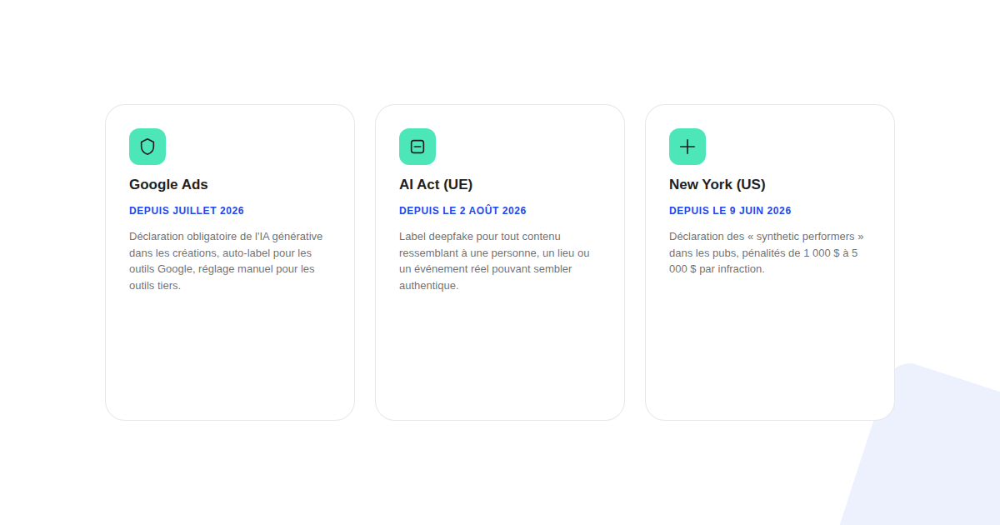
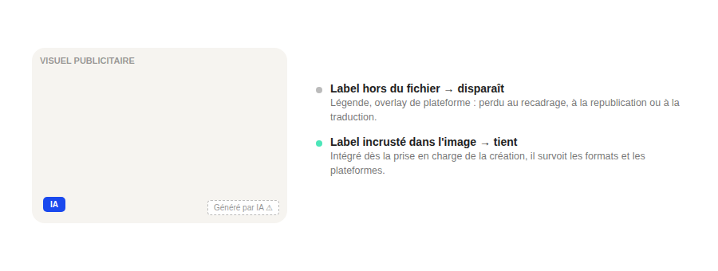

Disclosure IA obligatoire dans vos pubs : ce qui change concrètement en 2026
La question « dois-je déclarer cette création IA ? » n'a pas une seule réponse en 2026 : elle en a trois, selon où vous diffusez. Et le piège n'est presque jamais la déclaration elle-même — c'est l'endroit où vous la placez.

Depuis l'été 2026, trois cadres bien distincts imposent des obligations de déclaration pour les créations publicitaires générées ou retouchées par IA — une politique de plateforme, un règlement européen, une loi d'État américaine. Aucun ne reprend le seuil ou le périmètre d'un autre, ce qui rend une approche « une seule règle pour tout » risquée.
Le premier filtre : où cette publicité est-elle diffusée
Avant de chercher le bon niveau de déclaration, il faut d'abord savoir quels cadres s'appliquent concrètement à une campagne donnée :
- Sur Google Ads, toujours. Depuis juillet 2026, la plateforme impose à tout annonceur de déclarer l'usage d'outils génératifs dans ses créations, sur l'ensemble de ses formats. Les créations produites avec les propres outils IA de Google sont étiquetées automatiquement ; celles produites avec un outil tiers demandent d'activer manuellement un réglage de déclaration au moment de l'upload.
- Dès qu'un utilisateur européen peut voir la publicité. Depuis le 2 août 2026, les règles de transparence sur les deepfakes de l'AI Act s'appliquent. Les lignes directrices de la Commission du 20 juillet 2026 précisent que l'obligation cible un contenu qui ressemble à une personne, un objet, un lieu ou un événement réel et pourrait sembler authentique à tort — un avatar entièrement fictif n'est pas automatiquement concerné.
- Seulement si vous ciblez l'État de New York. Une loi entrée en vigueur le 9 juin 2026 y impose la déclaration des publicités utilisant des personnes générées par IA à la place d'acteurs réels, avec des pénalités rapportées de 1 000 $ pour une première infraction et 5 000 $ ensuite.
Pour la quasi-totalité des annonceurs français, les deux premiers filtres suffisent à couvrir le sujet : le troisième ne s'applique qu'à une diffusion ciblée sur cet État précis.

Le deuxième filtre : retouche ou génération complète
Un cadre sectoriel publié par l'IAB en janvier 2026 nuance le débat : toute utilisation de l'IA dans une création ne justifie pas nécessairement une déclaration. Son enquête relève que plus de la moitié des répondants souhaitent une déclaration lorsque la publicité est entièrement générée par IA ou utilise une image ou une vidéo IA — un seuil plus restrictif que « toute retouche assistée par IA ». En cas de doute entre les deux, déclarer reste la option la plus sûre.
Le point qui fait échouer la plupart des déclarations
Le problème pratique le plus fréquent n'est pas de savoir s'il faut déclarer, mais où placer la mention : un label ajouté en dehors du fichier (surcouche d'interface, texte dans la légende) disparaît souvent au recadrage automatique d'une plateforme, à la republication sur un autre réseau, ou à la traduction. La pratique qui tient dans la durée consiste à intégrer le label directement dans le visuel ou la vidéo elle-même, dès la prise en charge de la création — pas comme une étape ajoutée après coup.
FAQ
Une PME française est-elle concernée par la loi de New York ou le règlement européen ?
La loi de New York vise les publicités diffusées dans cet État, donc elle ne concerne a priori pas une PME qui ne cible pas ce marché. L'AI Act européen, en revanche, s'applique dès que la publicité touche des utilisateurs dans l'Union européenne, ce qui couvre la quasi-totalité des annonceurs français.
Faut-il déclarer un visuel simplement retouché par IA, ou seulement un visuel entièrement généré ?
Les seuils diffèrent selon le texte : l'obligation de label deepfake de l'AI Act cible un contenu qui pourrait sembler authentique en représentant une personne, un lieu ou un événement réel, pas une simple retouche cosmétique. Google Ads, de son côté, demande une déclaration dès qu'un outil génératif a été utilisé dans la création, retouche incluse selon les cas. En cas de doute, déclarer reste la option la plus sûre.
Comment s'assurer que le label de divulgation ne disparaît pas sur les réseaux sociaux ?
En intégrant le label directement dans le visuel ou la vidéo elle-même (incrusté dans l'image), plutôt que de compter sur un élément d'interface de la plateforme — un recadrage automatique ou une republication sur un autre réseau peut faire disparaître une mention ajoutée en dehors du fichier.
Envie de sécuriser vos créations publicitaires IA avant de les diffuser ?
Pour aller plus loin, voir les pages SMA et SEA, et l'article RGPD et marketing digital.
Pour continuer sur ce sujet.